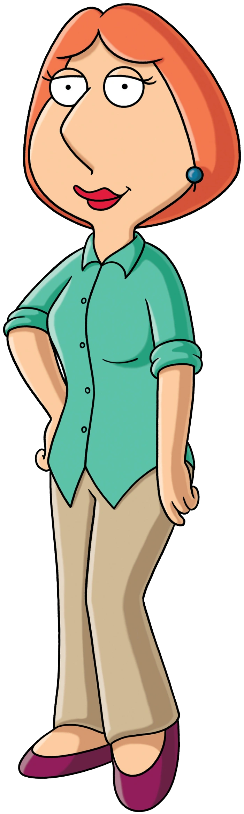
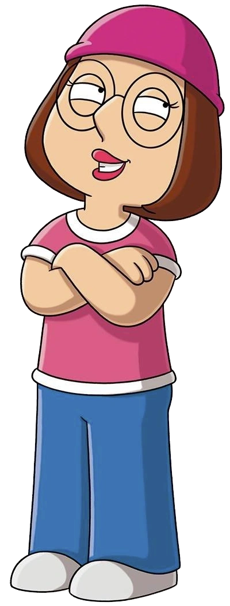
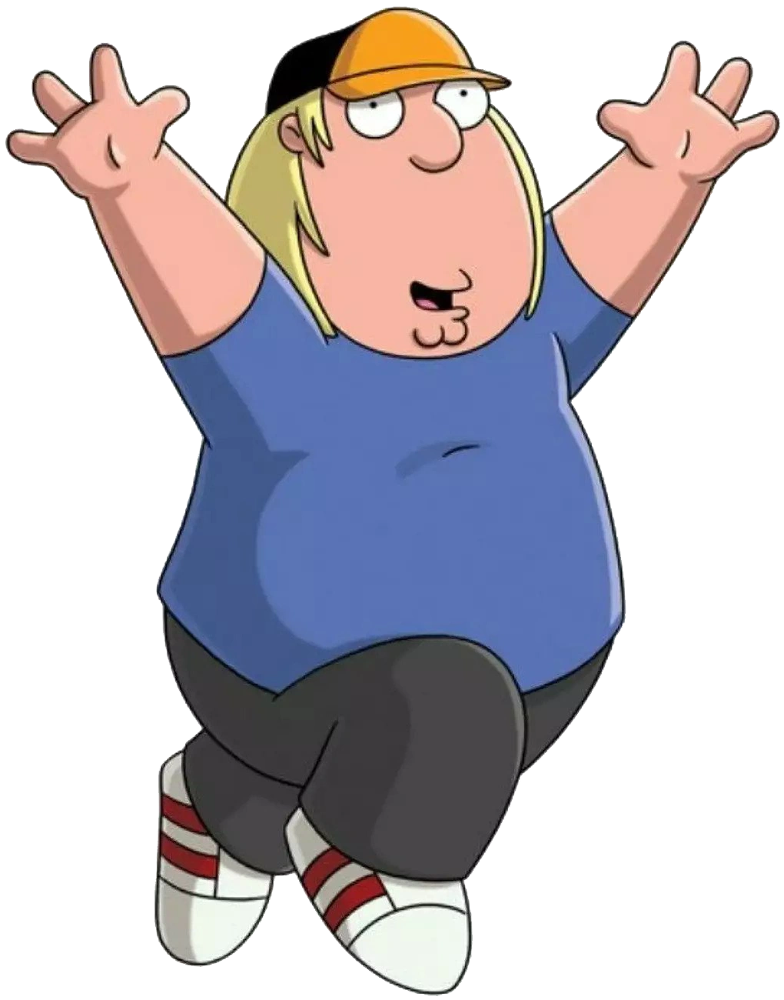
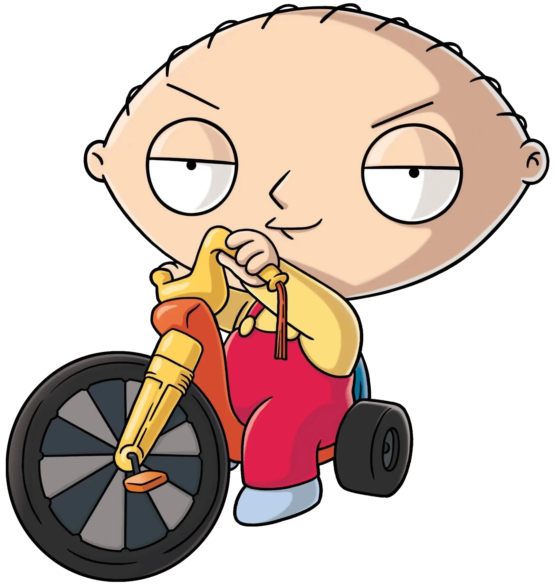
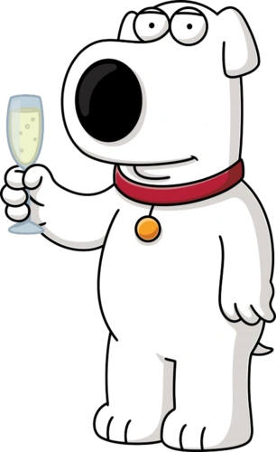
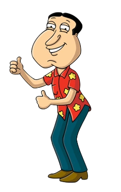
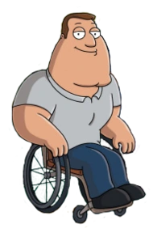
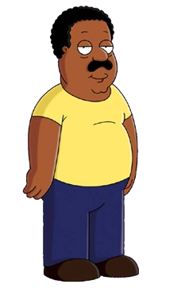

Petter Griffin

PJustin Peter Löwenbräu Griffin, Es el personaje principal de la serie Padre de Familia.
Lois Griffin
Born Lois Pewterschmidt es hija de los multimillonarios Carter Pewterschmidt y Barbara Pewterschmidt, esposa de peter.
Meg Griffin
Megatron "Meg" Griffin es uno de los personajes principales de Padre de Familia. Meg es la hija mayor de la Familia Griffin.
Chris Griffin
Christopher Cross "Chris" Griffin es uno de los personajes principales de Padre de Familia, siendo el hijo medio de la Familia Griffin.
Stewie Griffin
Stewart "Stewie" Gilligan Griffin es uno de los personajes principales de Padre de Familia, siendo además el hijo menor de la Familia Griffin.
Brian Griffin
Brian Griffin Es unos de los personajes principales de Padre de Familia. Es un perro labrador y la mascota de la Familia Griffin.
Glenn Quagmire
Glenn Quagmire es uno de los mejores amigos de Peter y es conocido como el pervertido del grupo.
Joe Swanson
Joseph "Joe" Swanson es uno de los amigos y vecinos de Peter, es un Oficial de policía parapléjico de Quahog.
Cleveland Brown
Cleveland Orenthal Brown es uno de los vecinos y amigos de Peter, es el estereotipo de hombre afroamericano en la serie.